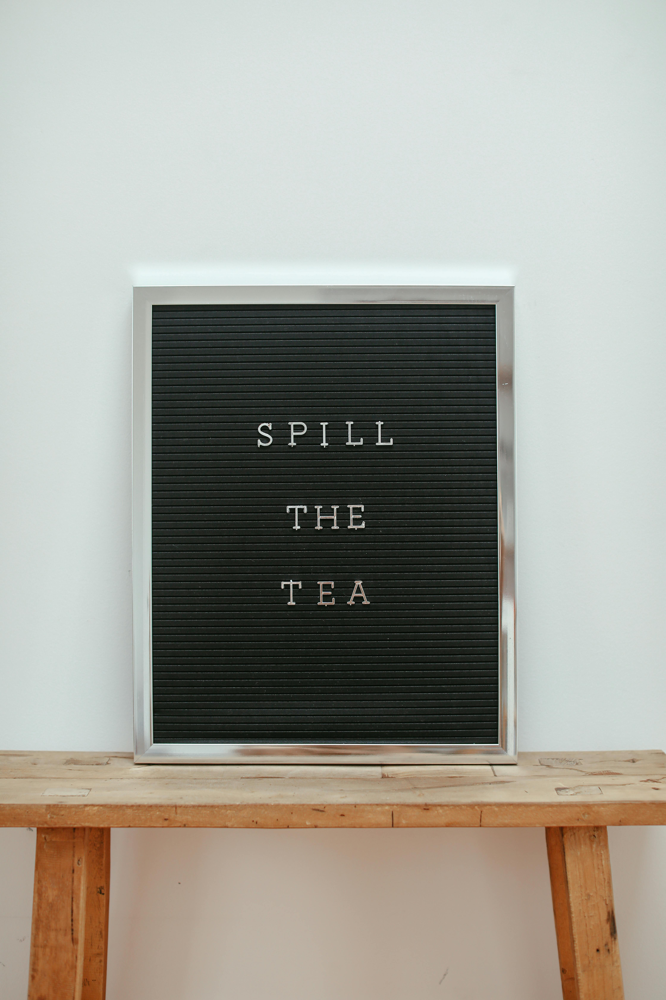

crédits image: Pexels (libre) — merci aux internets
Ce matin, j’ai remarqué qu’un pixel semblait manquer sur mon écran. Impossible de tenir ma comptabilité comme ça ! J’ai inspecté la loupe, nettoyé l’écran avec un chiffon adapté et vérifié les paramètres d’affichage. Mon enquête avançait plus sérieusement que prévu.
Après quelques tests, j’ai découvert que le pixel n’avait pas disparu : une fenêtre le cachait tout simplement. J’ai déplacé les fenêtres, retrouvé mon tableau et poussé un soupir de soulagement. Ma tirelire n’a perdu aucune pièce dans l’opération.
La méthode de Mini Castor
- Vérifie d’abord les réglages avant d’acheter un nouvel écran.
- Note les étapes qui ont résolu le problème pour la prochaine fois.
- Garde le budget prévu pour les réparations dans une tirelire séparée.
Leçon du jour : avant de dépenser, cherche la cause du problème. Les pièces économisées pourront financer une nouvelle caisse de pommes !